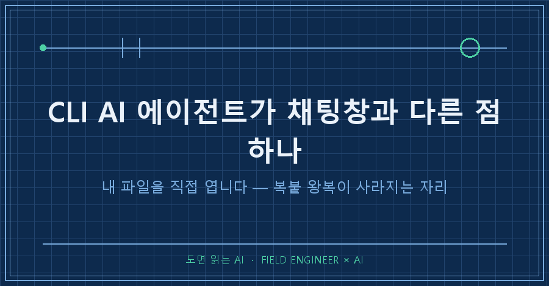
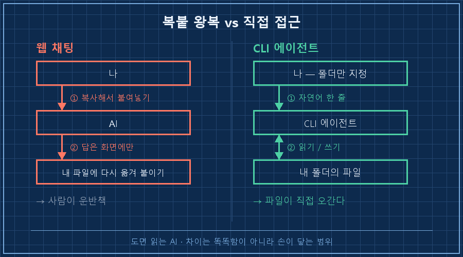
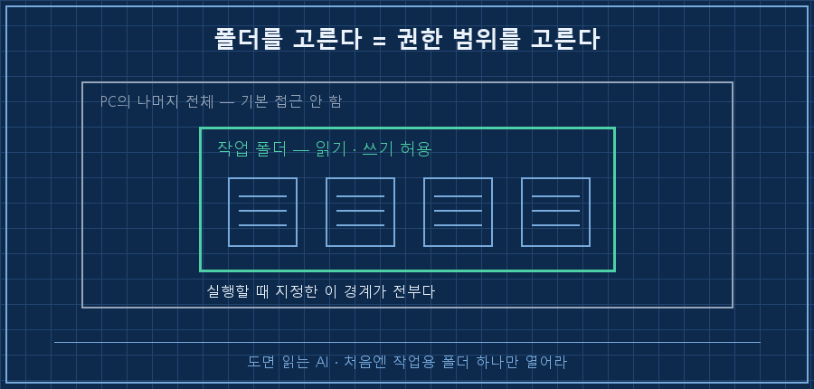
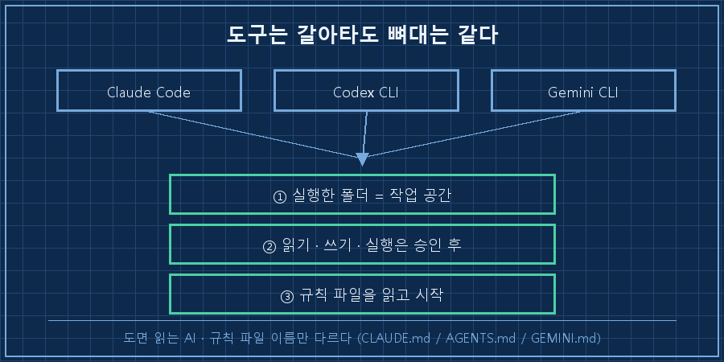

채팅창과 CLI AI 에이전트의 차이는 똑똑함이 아니라 손이 닿는 범위입니다. 채팅은 제가 복사해서 붙여 넣은 글자만 봅니다. CLI 에이전트는 제 PC의 폴더를 열어 파일을 직접 읽고, 고치고, 저장해요.
그래서 복붙 왕복이 사라집니다. 붙여넣고 → 답 받고 → 다시 내 파일에 옮겨 붙이고 → 다음 대화에서 또 처음부터 설명하고. 이 네 박자가 통째로 없어지는 거예요.
저는 제조 현장에서 제어·자동화로 15년을 보냈고 개발자는 아닙니다. 코드는 필요할 때 겨우 짜는 정도예요. 그런 사람 기준으로 터미널 처음 여는 것부터 쌓아가는 연재의 첫 편입니다. 오늘은 설치 전에 뭐가 다른지만 잡고 갈게요.
먼저 전제입니다. 2026년 9월 기준이에요.
| 항목 | 값 |
|---|---|
| OS | Windows 10/11 (맥·리눅스도 구조 동일) |
| 도구 | Claude Code 기준 (Codex CLI·Gemini CLI도 방식 같음) |
| 필요한 것 | 해당 서비스 유료 구독 또는 API 키 |
| 사전 지식 | 터미널 명령 두 개 — 폴더 이동, 실행 |
| 필요 없는 것 | 프로그래밍 언어 지식 |
1. 채팅창이 못 하는 건 읽기가 아니라 '쓰기'예요
CLI AI 에이전트란 터미널에서 실행되어, 지정한 폴더의 파일을 직접 읽고 고칠 수 있는 AI입니다. 요즘은 웹 채팅도 파일을 올리면 읽기는 해요. 차이는 결과를 돌려주는 자리에서 갈립니다.
채팅은 답을 화면에 줍니다. 내 파일에 반영하는 건 제 일이에요. CLI 에이전트는 답을 파일에 씁니다. 제가 하는 일은 그 변경을 승인하는 것뿐이고요.
| | 웹 채팅 | CLI 에이전트 |
|---|---|---|
| 입력 | 내가 붙여 넣은 만큼만 | 폴더에 있는 파일 그대로 |
| 파일 여러 개 | 하나씩 올리고 설명 | 폴더만 지정하면 전부 |
| 결과 | 화면에 텍스트 | 파일에 저장됨 |
| 반영 | 내가 다시 옮겨 붙이기 | 이미 반영돼 있음 |
| 맥락 | 새 대화마다 다시 설명 | 폴더에 둔 규칙 파일을 읽고 시작 |

2. 실제로는 이렇게 생겼습니다
시작은 두 줄이에요. 터미널을 열고 일할 폴더로 가서 도구를 실행합니다.
cd C:\작업폴더
claude그다음부터는 그냥 한국어로 말합니다. 첫 명령으로 저는 늘 이걸 시켜요.
> 이 폴더에 파일 몇 개 있어? 이름이랑 용량도 같이 알려줘여기서 중요한 건 제가 아무것도 안 올렸다는 점입니다. 첨부하지도, 목록을 붙여넣지도 않았어요. 폴더 안에 있으니까 그냥 보는 겁니다. 그래서 이 한 번이 연결 확인이 돼요. 알려준 적 없는 파일 개수를 맞히면 진짜 읽은 거고, 얼버무리면 폴더가 잘못 잡힌 겁니다.
파일을 고치는 것도 같은 방식이에요.
> 여기 사진 파일들 촬영 날짜 기준으로 이름 바꿔줘. 바꾸기 전에 목록부터 보여주고목록부터 보여달라는 게 핵심이에요. 승인 전엔 파일이 안 바뀌고, 승인하면 탐색기에서 파일명이 실제로 달라져 있습니다.

작업 폴더를 고르는 건 곧 권한 범위를 고르는 일이에요. 도구를 실행한 그 폴더가 경계입니다. 처음엔 작업용 폴더 하나만 만들어 거기서만 돌리시길 권해요.
첫 실행이 제대로 붙었는지는 이 순서로 봅니다.
| 순서 | 확인할 것 | 통과 기준 |
|---|---|---|
| 1 | 실행한 폴더가 맞나 | 시작 줄에 그 경로가 떠 있음 |
| 2 | 진짜 읽고 있나 | 내가 안 알려준 파일 개수를 맞힘 |
| 3 | 쓰기가 되나 | 파일 고친 뒤 탐색기 수정 시각이 바뀜 |
| 4 | 되돌릴 수 있나 | 원본 사본이 있거나, 변경 목록을 먼저 봤음 |
2번이 핵심이에요. 답이 그럴듯한 것과 파일을 실제로 읽은 것은 화면상 구분이 안 됩니다. 그래서 내가 모르는 걸 묻는 게 아니라, 내가 아는 걸 물어서 맞히는지 보는 거죠.
3. 복붙 22번이 명령 한 줄이 된 자리
2026년 4월에 개인적으로 맡아둔 작은 일이 있었어요. 부품 시리얼 번호마다 제품 페이지 주소를 만들고, 그 주소를 QR 코드 이미지로 뽑는 일입니다.
원래 방식은 웹 QR 생성기를 열고 → 주소 하나 붙여넣고 → 이미지 내려받고 → 파일명 바꾸고 → 모델별 폴더에 넣고. 그걸 22번 반복해요. 해보신 분은 아실 텐데, 어렵진 않은데 사람이 반드시 한 번은 틀립니다..
에이전트에게 건넨 건 시리얼 번호가 줄줄이 적힌 텍스트 파일 하나였어요. "이 목록으로 QR 만들어줘, 모델별로 폴더 나눠서."
시리얼번호.txt ─▶ generate_qr.py ─▶ 모델별 폴더 / PNG 400×400돌아온 건 이미지 22장과 생성 스크립트 하나. 다음에 또 오면 스크립트만 돌리면 됩니다.
그런데 진짜 소득은 시간이 아니었어요. 전수 대조에서 발표자료에는 22장인데 목록 파일에는 21개만 적힌 게 걸렸거든요. 한 건은 애초에 잘못 적힌 번호였습니다. 제가 복붙으로 22번 찍고 있었으면 그냥 22개 만들고 끝났을 거예요. 두 파일을 나란히 열고 한 줄씩 대조하는 건 사람이 제일 하기 싫어하는 일이잖아요.
마지막엔 만든 QR을 거꾸로 스캔해 주소가 맞는지까지 봤습니다. 매핑·내용·스캔 3단계 전수로 22건 전부 통과. 이 검증도 붙여넣기로는 불가능해요. 이미지 파일이 손에 있어야 하니까요.
4. 저는 이 습관 때문에 며칠을 돌아갔어요
솔직히 저도 한참 채팅창 사고방식에서 못 빠져나왔습니다.
화면 캡처를 붙여넣으려고 단축키를 눌렀는데 터미널이 화면을 세로로 쪼개기만 하더라고요. 설정 파일을 열어보니 반년 전에 제가 그 키에 화면 분할을 배정해둔 거였어요. 그것도 터미널 두 개 다. 예전에 다른 키와 충돌해서 피신시켜둔 자리였는데, 하필 그 피난처가 이번 자리였습니다.
문제는 그다음이었어요. "폰이나 맥북에서도 붙여넣게 앱을 하나 만들까"로 생각이 커졌거든요. 기록을 뒤져보니 비슷한 걸 만들려다 방식 다섯 개가 전부 깨진 이력이 이미 있더라고요. 결국 새 앱은 0줄, 돌아가던 봇에 25줄 붙여서 끝났습니다.
거기서 원리 한 줄을 건졌습니다. 드래그도, @도, Ctrl+V도 전부 경로 전달이었어요. 파일 내용을 밀어 넣는 게 아니라 "그 파일 거기 있다"고 위치를 알려주는 겁니다.
내가 주는 것 : C:\작업폴더\목록.txt ← 위치
AI가 하는 것 : 그 위치를 열어서 읽는다 ← 내용은 AI가 가져감그래서 원격 접속한 다른 기기의 파일은 아무리 복사해도 안 들어갑니다. 그 PC에 파일이 실재해야 하거든요. 이걸 알고 나니 붙여넣기에 매달릴 이유가 사라졌어요. 폴더에 두면 끝이니까요!
5. GPT·Gemini CLI로도 똑같이 됩니다
이 연재는 Claude Code로 설명하지만 도구를 고르는 얘기는 아닙니다. 2026년 9월 기준 주요 CLI 에이전트 셋은 구조가 같아요.
| 도구 | 실행 명령 | 규칙 파일 |
|---|---|---|
| Claude Code (Anthropic) | claude | CLAUDE.md |
| Codex CLI (OpenAI) | codex | AGENTS.md |
| Gemini CLI (Google) | gemini | GEMINI.md |
셋 다 ①실행한 폴더를 작업 공간으로 잡고 ②파일 읽기·쓰기·명령 실행을 승인받아 하고 ③폴더에 둔 규칙 파일을 읽고 시작합니다. 이름만 다르고 뼈대가 같아요. 그래서 이 연재에서 만들 기록 구조와 규칙 파일은 도구를 갈아타도 그대로 씁니다.

6. 시작 전에 많이 걸리는 질문 셋
Q. 개발을 못 하는데 괜찮나요?
명령 두 개로 시작합니다. 저도 그 이상 안 외웠어요. 다만 승인 버튼을 누를지 말지는 사람이 판단해야 해서, 코딩 실력보다 뭘 시켰는지 기억하는 습관이 훨씬 중요하더라고요.
Q. 제 파일이 통째로 어디론가 넘어가는 건가요?
파일과 실행은 제 PC 안에서만 일어납니다. 다만 대화 내용 자체는 그 서비스 서버를 거쳐요. "로컬 도구니까 아무것도 안 나간다"는 절반만 맞는 말입니다. 그래서 저는 민감한 폴더를 애초에 작업 폴더로 안 잡아요.
Q. 그럼 웹 채팅은 이제 안 쓰나요?
씁니다. 손에 파일이 없고 생각만 정리할 땐 채팅이 훨씬 빨라요. 기준은 단순합니다. 결과물이 파일로 남아야 하면 CLI, 머릿속만 정리하면 채팅. 참고로 워드·엑셀·파워포인트는 CLI 에이전트도 그냥은 못 읽어요. 속이 압축된 형식이라 따로 처리가 필요합니다.
오늘 얘기는 사실 한 줄이에요. 채팅은 내가 운반책이고, CLI는 파일이 직접 오간다는 것. 여러분도 아직 복사·붙여넣기로 AI랑 일하고 계신가요?
다음 편은 설치와 첫 실행입니다. 10분이면 되는데 비개발자가 가장 많이 미끄러지는 자리가 딱 하나 있어요. 폴더 경로에 한글이나 공백이 들어갔을 때 벌어지는 일부터 짚고 시작하겠습니다.
연재 전체 순서와 중간에 만드는 파일들은 makefield.ai에 한 묶음으로 올려둡니다. 블로그엔 한 편씩, 거기엔 순서대로요.
태그: #CLIAI에이전트 #클로드코드 #ClaudeCode #CodexCLI #GeminiCLI #터미널AI #AI에게파일읽히기 #복붙자동화 #비개발자AI #AI자동화구축 #AI에게일시키기 #개인AI에이전트 #파이썬자동화 #현장엔지니어AI #도면읽는AI